MySQL è uno dei più diffusi database server, e non deve stupire che abbia un’estensione spaziale (peraltro attiva di default). Mi stupisce però che le funzioni per testare le relazioni spaziali tra oggetti siano limitate.
Mi spiego con un esempio classico: selezionare tutti i punti di un layer che cadono all’interno del perimetro di un poligono presente in un altro layer. E’ un’operazione tipica dei GIS, e presente in tutti database con estensione spaziale.
In MySQL basta lanciare una query spazialedi questo tipo:
SELECT * FROM poligoni as g1, punti as g2 WHERE Contains(g1.geometry,g2.geometry) = 1
Purtroppo però l’output non è costituito da tutti i punti contenuti nel perimetro di mio interesse, ma da tutti quelli contenuti nel rettangolo che lo include. Quest’ultimo è il classico BoundingBox, o come si definisce in ambiente MySQL Minimal Bounding Rectangles (MBR). Nel manuale online è riportato:
The OpenGIS specification defines the following functions. They test the relationship between two geometry values g1 and g2.
Questo dovrebbe garantire che l’output della funzione Contains() sia relativo al perimetro dell’oggetto “target”, ma poco più avanti si legge:
Currently, MySQL does not implement these functions according to the specification. Those that are implemented return the same result as the corresponding MBR-based functions.
Immagino che i GeoSpatial Developers abbiano diverse frecce al loro arco per superare questo problema, così come ne esisteranno diverse lato utente. Una potrebbe essere quella di non usare questo database server e fare tutto con PostGIS, Oracle Spatial, Spatialite, ecc., ma è troppo facile e non sempre si può scegliere.
Io ho pensato a GDAL/OGR ed alle sue utility per oggetti vettoriali, ed alla possibilità (che esiste dalla versione 1.10 della libreria) di usare il dialetto SQLite/Spatialite. Questo dialetto estende di molto quello che queste utility fanno (egregiamente) di default, ovvero eseguire delle query sql all’interno di un comando; ad esempio:
ogrinfo province.shp province -sql "SELECT nome FROM province WHERE ID_PRO = 2"
Con il dialetto SQLite/Spatialite ho a disposizione anche le funzioni per verificare relazioni spaziali tra oggetti, anche per quelle basi dati che non prevedono intrinsecamente la possibilità di farlo, proprio come MySQL spatial.
Andando nel concreto dovrei scrivere una cosa di questo tipo:
ogrinfo MYSQL:"mydb,user=myuse,password=mypwd,port=3306" -dialect sqlite -sql "SELECT *FROM poligoni as g1, punti as g2 WHERE Contains(g1.geometry,g2.geometry) = 1"
La sorpresa è che, nonostante si dichiari nella stringa il “dialetto” sqlite, si ottiene sempre come output quello relativo ai punti contenuti nel bounding box del perimetro di interesse. E’ un baco? Nella documentazione di OGR si legge:
All OGR drivers for database systems: MySQL, PostgreSQL and PostGIS (PG), Oracle (OCI), SQLite, ODBC, ESRI Personal Geodatabase (PGeo) and MS SQL Spatial (MSSQLSpatial), override the OGRDataSource::ExecuteSQL() function with dedicated implementation and, by default, pass the SQL statements directly to the underlying RDBMS. In these cases the SQL syntax varies in some particulars from OGR SQL. Also, anything possible in SQL can then be accomplished for these particular databases. Only the result of SQL WHERE statements will be returned as layers.
Ma si legge anche:
The SQLite dialect may be used with any OGR datasource, like the OGR SQL dialect. It is available through the OGRDataSource::ExecuteSQL() method by specifying the pszDialect to “SQLITE”. For the ogrinfo or ogr2ogr utility, you must specify the “-dialect SQLITE” option.
La soluzione l’ho trovata in un test stupido che ho voluto fare: accedere alla fonte MySQL non direttamente, ma tramite il Virtual Format di OGR, che in qualche modo astrae l’accesso al formato di input.
A partire quindi da una fonte MySQL costruita secondo le specifiche del Virtual Format e salvata come “test.vrt”:
ogrinfo test.vrt -dialect sqlite -sql "SELECT *FROM poligoni as g1, punti as g2 WHERE Contains(g1.geometry,g2.geometry) = 1"
Il risultato ottenuto sarà così quello desiderato e l’output corrisponderà a tutti i punti che ricadono nel perimetro di interesse. Nell’immagine di sotto, ho raccontato il tutto in modo visuale.
Concludo sottolineando quanto siano interessanti, utili, belle e di alto livello professionale alcune delle dinamiche delle comunità open source. Ho segnalato quello che a me sembrava un baco alla lista GDAL – DEV. Non solo ho ottenuto subito delle risposte che mi hanno consentito di capirne molto di più, ma si sono messi già al lavoro sia in termini di codice che di documentazione. Un semplice “grazie” sembra veramente poco.
Questo post è dedicato a Flaviano, un mio amico che grazie anche ad alcuni tips & tricks su GDAL/OGR ha trovato un bel posto di lavoro in Qatar
NDR: Jukka Rahkonen, uno sviluppatore di GDAL/OGR, mi fa notare che dalla release in trunk r26506 di GDAL e a partire dalle future release stabili ufficiali, non sarà necessario creare alcun file virtuale. Si potrà accedere direttamente alla sorgente MySQL e impostare la proprietà “-dialect” al valore “SQLITE”.
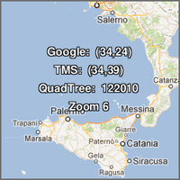La cartografia digitale è ormai da tempo invasa da milioni di tasselli. I layer di Virtual Earth (che sono vecchio!), OpenStreetMap, Yahoo! Maps, Google Maps, ecc. sono da tempo distribuiti a pezzetti da 256×256 pixel e poi ricomposti nei nostri browser. Le modalità con cui la cosa viene realizzata sono “abbastanza” standard; se si prova però ad approfondire un po’, si scopre ad esempio una grande varietà nel definire l’indice numerico associato ad un dato tassello, di una certa zona del mondo, ad uno specifico livello di zoom. La mia amata/odiata Sicilia ad esempio, a livello di ingrandimento “6″, la posso richiamare nei modi diversi che vedete qui accanto, per tre dei più diffusi indici di tassellamento. Per approfondire il tema vi consiglio di partire da qui.
Nel tempo queste mattonelle cartografiche sono aumentate a dismisura e ce le troviamo anche in tasca. Penso ai nostri smartphone e al fatto che la quasi totalità delle basi cartografiche delle applicazioni che installiamo in questi sono distribuite a tasselli.
E nel prossimo futuro la diffusione sarà ancora più pervasiva, in quanto passeranno dall’essere consultati quasi esclusivamente tramite servizi/server web, all’essere letti direttamente da un file residente sul nostro terminale. Un esempio per tutti è quello del GeoPackage, un formato standard che l’OGC sta definendo, in cui le basi raster potranno essere archiviate proprio a tasselli. Un po’ come rasterlite di Sandro Furieri, che credo sia in qualche modo lo scheletro portante di questo nuovo formato OGC.
I tasselli sono talmente tanti che ormai spesso trovo negli hard-disk, pen-drive USB, DVD (come sono vecchio!), schede SD, ecc. quelle strane cartelle a loro volta suddivise in decine e decine (nel caso migliore) di sottocartelle, tipiche della struttura di archiviazione su file system di basi dati tassellate e piramidate.
Proprio per questo ho pensato di scrivere un articolo su come accedere ad un archivio cartografico di questo tipo, che in qualche modo è il complementare ad un altro scritto nel lontanissimo 2008 e in cui viene illustrato come tassellare un’immagine.
Come accedere ad un archivio cartografico a tasselli e ricomporlo in un unica immagine georeferenziata?
In sé la cosa sembra ovvia, in quanto si tratta di formati file leggibili da qualsiasi terminale con qualsiasi sistema operativo: parliamo infatti nella stragrande maggioranza dei casi di .jpg e .png. Sfoglio le cartelle, faccio doppio click su una delle immagini e le visualizzo in un attimo. E dove è finita l’informazione geografica?
Se le apro infatti con un visualizzatore di immagini è normale che le uniche coordinate riconosciute siano i pixel, ma se provate ad aprire lo stesso tassello con una applicazione GIS, il risultato non cambia. L’informazione geografica infatti non è presente nemmeno in qualche tag nascosto internamente ai file e quindi non può essere letta. Per assurdo tutti i tasselli sembrano sovrapposti nello stesso punto della terra, ad una sola risoluzione.
L’arcano si risolve proprio nella lettura della struttura della cartella in cui sono archiviati e quindi nella conoscenza dell’indice utilizzato per generare tutti i pezzetti di mondo alle varie scale di ingrandimento. Data infatti una certa modalità di tassellamento, ogni punto della terra è associato ad una certa tessera di questo enorme mosaico, per un certo livello di zoom.
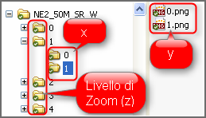Ma sporchiamoci un po’ le mani. Nell’immagine accanto una cartella di output di un tassellamento, con le sue sottocartelle, che potete scaricare da qui. Se la si sfoglia un po’ e si provano ad aprire i singoli file che troviamo all’interno delle varie cartelle, è evidente che quello che varia per ogni tassello è l’ingrandimento e/o l’area della Terra rappresentata. Posizione e zoom, ovvero x, y e z.
In questo esempio, ed è facile verificarlo in modo empirico, il primo livello di sottocartelle è legato all’ingrandimento: dalla cartella “0″ con la risoluzione più bassa a quella “4″ con quella più alta. All’interno di queste invece le eventuali sottocartelle rappresentano spostamenti lungo l’asse x. Nella figura di sopra quindi le cartelle “NE2_50M_SR_W\1″ e “NE2_50M_SR_W\1\1″ contengono, per il livello di zoom “1″, porzioni di Terra affiancate. La variazione lungo l’asse y è invece resa, per ogni cartella, dal nome del file: il tassello “1.png” sta a Nord di quello “0.png”.
Nella figura sottostante ho schematizzato la cosa, per rendere ancora più leggibile e chiara questa struttura.
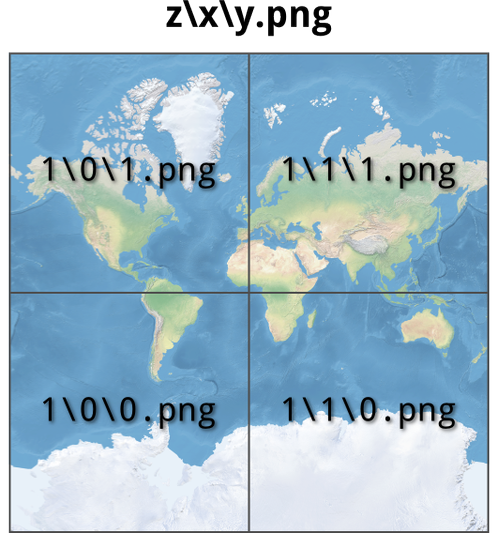
Conoscere tutto questo ovviamente non basta a posizionare queste immagini nello spazio, ma soltanto in modo relativo. Per fortuna però il tassellamento viene fatto secondo standard, magari diversi, ma definiti. Quindi se conosciamo (o riconosciamo) lo standard con cui sono state generate le nostre tessere, basterà essere in possesso di un client che sappia leggere questo standard e queste verranno posizionate correttamente nello spazio cartografico. Un po’ come quando accediamo ad un servizio WMS.
La cartella di esempio che sto usando per questo esercizio contiene al suo interno (per fortuna c’è quasi sempre qualcosa di simile) il seguente file .xml.
E’ un piccolo tesoro che ci dice quasi tutto della struttura a tasselli che stiamo analizzando:
la specifica sul formato di tassellamento, ovvero il TMS 1.0 (Tile Map Service) di OSGeo;
lo Spatial Reference System usato;
il Bounding Box;
l’origine del mosaico dei tasselli;
formato e dimensioni dei tasselli;
e la risoluzione per ogni livello di zoom.
Non ci resta che trovare un client compatibile con lo standard TMS e provare a leggere questa struttura dati. La scelta va ancora una volta verso il Victorinox delle librerie spaziali, ovvero GDAL/OGR. Sfruttando infatti i minidriver di GDAL, descritti in fondo nella pagina di accesso ai servizi WMS, è possibile accedere direttamente a dati esposti in TMS; sia come che su file system. Prima è però necessario definire un file di configurazione, come descritto nella documentazione di cui sopra e di cui si riporta a seguire un esempio, basato sui dati che sto usando per questo post.
Il file contiene, in modo differente, quasi le stesse informazioni descritte prime per il file .xml. Tra queste:
il tipo di servizio - <service name>
l’indirizzo per accedere ai dati - <serverurl>
il formato immagine della sorgente dati - <imageformat>
il Bounding Box - <upperleftx>, <upperlefty>, …
il livello di Zoom con la risoluzione più alta, che ricavo proprio dal file.xml di sopra - <tilelevel>
lo Spatial Reference System - <projection>
la dimensione in pixel dei tasselli - <blocksizex>, <blocksizey>
Il valore del parametro ServerUrl – ovvero l’indirizzo della sorgente dati – è di solito quello di un servizio web con una forma di questo tipo: http://myserver.it/NE2_50M_SR_W/${z}/${x}/${y}.png.
Nel caso descritto i dati sono su un hard-disk di un PC e quindi, l’accesso non è in HTTP ma secondo lo schema URI di accesso a file: file://C:/tmp/NE2_50M_SR_W/${z}/${x}/${y}.png (in questo esempio la cartella dei dati è all’interno di “C:\tmp”).
Nell’URI è necessario indicare come è realizzata, in termini di struttura e nomi dei file, la mappatura di x, y e z. Nel caso in esame abbiamo visto che è resa come z/x/y.png, e cosi è stata riportata nel file di configurazione. Bisogna soltanto fare attenzione alla sintassi che prevede l’utilizzo di alcuni caratteri speciali.
Creato il file di configurazione e salvato con nome (ad esempio “input.txt”), non resta che provare a leggere i dati. Il primo passo, un po’ per fare debug è aprire la shell e digitare:
gdalinfo input.txt
Come risultato, se tutto è correttamente configurato, si otterrà:
Driver: WMS/OGC Web Map Service
Files: input.txt
Size is 4096, 4096
Coordinate System is:
PROJCS[\"Google Maps Global Mercator\",
GEOGCS[\"WGS 84\",
DATUM[\"WGS_1984\",
SPHEROID[\"WGS 84\",6378137,298.257223563,
AUTHORITY[\"EPSG\",\"7030\"]],
AUTHORITY[\"EPSG\",\"6326\"]],
PRIMEM[\"Greenwich\",0,
AUTHORITY[\"EPSG\",\"8901\"]],
UNIT[\"degree\",0.01745329251994328,
AUTHORITY[\"EPSG\",\"9122\"]],
AUTHORITY[\"EPSG\",\"4326\"]],
PROJECTION[\"Mercator_2SP\"],
PARAMETER[\"standard_parallel_1\",0],
PARAMETER[\"latitude_of_origin\",0],
PARAMETER[\"central_meridian\",0],
PARAMETER[\"false_easting\",0],
PARAMETER[\"false_northing\",0],
UNIT[\"Meter\",1],
EXTENSION[\"PROJ4\",\"+proj=merc +a=6378137 +b=6378137 +lat_ts=0.0 +lon_0=0.0 +x_0=0.0 +y_0=0 +k=1.0 +units=m +nadgrids=@null +wktext +no_defs\"],
AUTHORITY[\"EPSG\",\"900913\"]]
Origin = (-20037508.340000000000000,20037508.340000000000000)
Pixel Size = (9783.939619140624900,-9783.939619140624900)
Image Structure Metadata:
INTERLEAVE=PIXEL
Corner Coordinates:
Upper Left (-20037508.340,20037508.340) (180d 0' 0.00\"W, 85d 3' 4.06\"N)
Lower Left (-20037508.340,-20037508.340) (180d 0' 0.00\"W, 85d 3' 4.06\"S)
Upper Right (20037508.340,20037508.340) (180d 0' 0.00\"E, 85d 3' 4.06\"N)
Lower Right (20037508.340,-20037508.340) (180d 0' 0.00\"E, 85d 3' 4.06\"S)
Center ( 0.0000000, 0.0000000) ( 0d 0' 0.01\"E, 0d 0' 0.01\"N)
Band 1 Block=256x256 Type=Byte, ColorInterp=Red
Overviews: 2048x2048, 1024x1024, 512x512, 256x256
Band 2 Block=256x256 Type=Byte, ColorInterp=Green
Overviews: 2048x2048, 1024x1024, 512x512, 256x256
Band 3 Block=256x256 Type=Byte, ColorInterp=Blue
Overviews: 2048x2048, 1024x1024, 512x512, 256x256
Siamo riusciti a leggere correttamente le informazioni sui nostri dati e non abbiamo avuto nessun errore. A questo punto il comando per la ricomposizione in un’unica immagine georeferenziata è la cosa più ovvia, è gdal_translate:
gdal_translate input.txt output.tif
L’output sarà un unico file geotiff, Mission Accomplished!
Questo ovviamente è un caso semplice, costruito in modo che sia replicabile e didatticamente valido. Nella pratica quotidiana è tutto un po’ più complicato, ma leggendo i riferimenti indicati nell’articolo, documentandosi un po’, sarà possibile replicare la cosa con i propri dati.
La carta di base da cui ho generato i tasselli (che poi ho ricomposto) è la bella “Natural Earth II with Shaded Relief and Water“. E’ rilasciata sotto pubblico dominio e scaricabile da qui.
Con i minidriver di GDAL/OGR si possono fare tante altre cose, come accedere e quindi (volendo) scaricare, i tasselli di Bing Maps e Google Maps, facendo però la giusta attenzione ai termini legali imposti. Inoltre il file di testo di input creato sopra, può essere trascinato in drag & drop su Quantum GIS e visualizzato pochi secondi dopo. Questo sempre grazie all’esistenza degli standard e di GDAL/OGR.
Questo articolo diverrà magari presto “superato” proprio perché l’invasione dei tasselli sarà probabilmente peggiore di un attacco zombie, e saranno pertanto sviluppate modalità di accesso, procedure e interfacce ancora più semplici e trasparenti. Il fatto di poter accedere al basso livello descritto in questo articolo, offre comunque una potenza e una libertà di impieghi che difficilmente si potrà ottenere tramite strumenti di livello più alto.
In ultimo ringrazio Lorenzo Perone che mi ha dato gli stimoli per mettere in linea questi pensieri e questo processo.
I nostri più assidui lettori sicuramente ricorderanno un “vecchio” post di Andrea Borruso dal titolo“Il tasto destro per alleggerire un po’ il lavoro di chi si occupa di GIS (su Windows e su Linux)”, un evergreen del nostro blog tra i più visitati di sempre. Ebbene, in accordo con la postilla che scriviamo in calce ai nostri post dopo un anno dalla loro pubblicazione (ci teniamo a ricordarlo!), il post di Andrea, pur sempre attualissimo, merita un aggiornamento in virtù del fatto che il software Open++ da lui brillantemente recensito ha subito di recente alcune evoluzioni significative tali da rendere inefficaci le istruzioni scritte all’epoca (…ben due anni e mezzo fa!).
In particolare, Andrea ci mostrava come configurare Open++ in modo da “automatizzare” l’utilizzo di alcune utility dello swiss knife geospaziale per eccellenza: la libreria GDAL. Cercheremo pertanto di ottenere lo stesso risultato di allora, utilizzando stavolta l’ultima release di Open++ (v. 1.5.1).
Partiamo innanzitutto dal notare che la struttura della finestra di dialogo di Open++ è leggermente cambiata rispetto al passato. In luogo della scheda Language, ora ne sono presenti altre due: Install/Uninstall e About. Tralasciando l’ovvio significato di quest’ultima, la scheda Install/Uninstall è stata introdotta in sostituzione del vecchio installer, rendendo quindi l’applicazione portabile (può essere eseguita su una semplice chiavetta USB). La scheda principale (Commands) è apparentemente rimasta invariata rispetto al passato. Tuttavia, come ci fa notare Chiara (una lettrice che di recente ha commentato il post di Andrea, sollevando il problema), qualcosa è cambiato nella versione 1.5.1 (probabilmente anche prima): si tratta essenzialmente delle variabili utilizzabili nella casella di testo in cui andiamo a configurare i nostri comandi e, in particolare, quella degli argomenti (Arguments), come mostrato nella figura seguente.
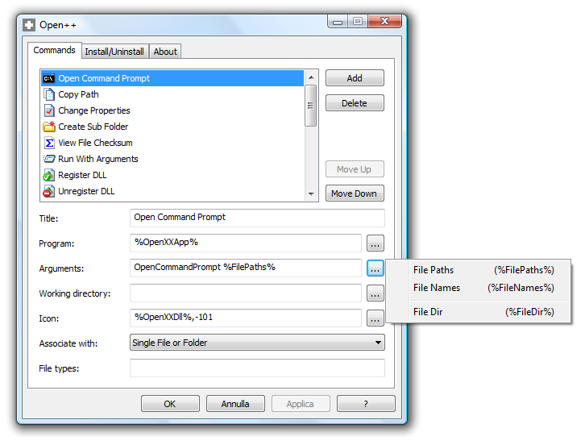
Tali variabili, per quanto siano di una chiarezza quasi disarmante, risultano però meno flessibili da gestire rispetto alle versioni precedenti specie quando, come nel caso delle utility della libreria GDAL, il nostro comando accetta due o più parametri basati sul nome del file in ingresso. Fortunatamente, ci viene in soccorso l’unica FAQ presente nell’help file di Open++ (abbastanza criptico, in verità…) in cui è mostrato l’utilizzo di un ciclo for in linguaggio batch all’interno degli argomenti. Dunque, se è possibile usare il linguaggio batch, è altrettanto possibile usare anche i parametri batch e trarne così beneficio nel gestire i nomi dei file con o senza le loro estensioni. Ovviamente un ciclo for è applicabile anche su un singolo file e quindi il gioco è fatto!
Andando al sodo, per prima cosa consiglio di aggiungere la cartella dei binari di GDAL (o di FWTools, se preferite) all’interno della variabile PATH di sistema. Così potrete facilmente eseguire qualsiasi tool di GDAL all’interno di una qualsivoglia cartella, senza la necessità di dover riscrivere il suo percorso. In questo altro post sempre di Andrea (lo “swiss knife” di TANTO ) è descritto come fare. Nel seguito, assumerò che lo abbiate fatto.
Quindi aggiungiamo un separatore delle opzioni di menù nella scheda Commands di Open++ e proviamo a configurare l’utility relativamente più semplice tra quelle trattate da Andrea: gdalinfo. Per prima cosa, scriviamo “GDALinfo” come titolo. Poi, trattandosi di una utility che si esegue da riga di comando, il programma da utilizzare sarà %ComSpec%, ovvero il nome della variabile di ambiente usata da Windows per indicare l’interprete da linea di comando (CLI), solitamente cmd.exe. Fin qui nulla di nuovo rispetto al post di Andrea. Negli argomenti, invece, scriveremo:
/k gdalinfo %FilePaths%
La spiegazione è piuttosto semplice: /k significa che vogliamo mantenere la finestra aperta dopo l’esecuzione del comando (altrimenti non riusciremmo a leggere le informazioni), gdalinfo è il nome dell’eseguibile dell’utility e, quindi, %FilePaths% è una variabile che rappresenta il vettore dei percorsi dei file passati come parametro. La directory di lavoro coincide con la directory del file stesso (%FileDir%), scegliamo eventualmente un’icona per rappresentare il comando, associamo il comando al singolo file e, infine, esplicitiamo le estensioni possibili del file in ingresso. Nulla di trascendentale, verrebbe da pensare.
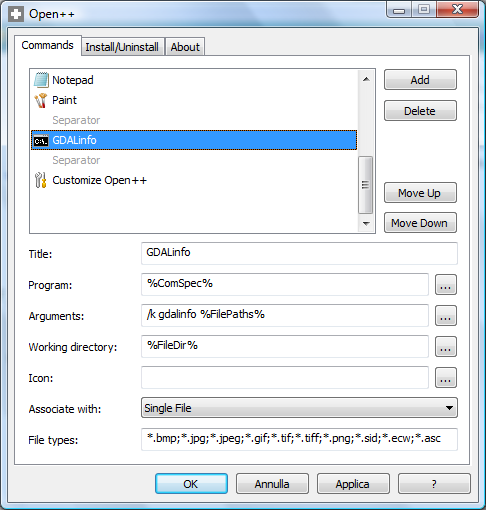
Le cose si complicano, invece, quando andiamo a mettere in pratica l’esempio di Andrea relativo a gdal_translate. La procedura è sostanzialmente identica al caso precedente, ad eccezione dell’argomento. Tuttavia, come anticipavo in precedenza, ci viene ottimamente in soccorso l’unica FAQ a disposizione. E, pertanto, l’argomento da scrivere per convertire in formato JPEG sarà:
/c for %i in (%FilePaths%) do start gdal_translate -of JPEG %~nxi %~ni.jpg
che, in pratica, significa che per tutti i file contenuti nel vettore dei percorsi %FilePaths% (nel nostro caso, contiene un unico percorso in quanto selezioneremo un unico file) esegue il comando gdal_translate -of JPEG %~nxi %~ni.jpg, dove %~nxi è il nome compreso di estensione del raster sorgente, mentre %~ni è il nome privo di estensione del raster di destinazione, seguito poi da .jpg.
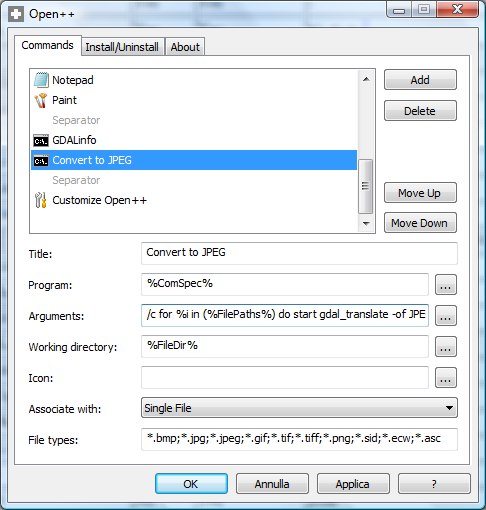
E non è ancora tutto! Visto che usiamo un ciclo for come argomento e che Open++ prevede l’associazione dei suoi comandi anche ad un insieme di file, possiamo quindi rendere la conversione in JPEG in modalità batch. A tal fine, creeremo sostanzialmente una copia del Convert to JPEG in cui aggiungeremo solo il termine (batch) alla fine del titolo e poi cambieremo l’opzione Associate with da Single File a Multiple File. Possiamo quindi selezionare più file raster e da menù contestuale scegliere l’opzione Convert to JPEG (batch) per avere la conversione in blocco di tutti i file selezionati. E’ quindi adesso facile definire altri comandi di conversione verso altri formati raster supportati da GDAL …e non solo!
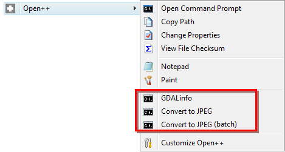
Per i più pigri, ecco il file di configurazione OpenXX.ini dei comandi descritti in precedenza. Basta copiarlo nella cartella contenente Open++, eseguirlo …et voilà …si otterrà la stessa identica configurazione. Si tratta di un metodo semplice e rapido per condividere le proprie raccolte di comandi con i colleghi.
Una nota a margine: in caso si decida di definire comandi per effettuare operazioni di coordinate, occorre aggiungere alla variabile PATH di sistema anche il percorso della cartella di GDAL (o eventualmente della libreria proj.4) che contiene le definizioni dei vari sistemi cartografici definiti da EPSG.
Infine, un grosso ringraziamento a Chiara per averci costretti a rivalutare un post obsoleto.
Python (http://python.org) è un linguaggio di programmazione di alto livello, adatto ai più svariati obiettivi di programmazione. Viene usato per applicazioni web e desktop, giochi, programmazione scientifica, utility e anche per porzioni di sistemi operativi.
Anche chi ha la necessità di sviluppare delle applicazioni in grado di leggere, scrivere, analizzare ed elaborare dati ed informazioni spaziali, troverà in Python un compagno di viaggio piacevole, eclettico e ricco di pregi. Chi lavora in questo contesto e segue il mondo della programmazione, sa che si tratta di un linguaggio che sta diventando tra i più diffusi, sia nel mondo proprietario che in quello open-source, con a disposizione numerose librerie ad hoc.
Anche per questo, penso sia arrivato il momento (anzi mi sento in grande ritardo) di scrivere un post che fornisca gli strumenti per iniziare a “sporcarsi le mani”.
In linea teorica è possibile scrivere da zero codice Python che consenta di manipolare dati spaziali. Per fortuna esiste – tra le tante librerie disponibili – il binding Python di GDAL/OGR; per iniziare è molto più comodo appoggiarsi sulle spalle di questo gigante.
Due annotazioni prima di passare agli aspetti pratici:
questo post consentirà di configurare Python e GDAL/OGR in ambiente Windows. Confido in qualche collega della redazione per scrivere le istruzioni utili per altri sistemi operativi
verrà descritta una delle tante modalità possibili per configurare l’ambiente
Procedura
Installare GDAL per Python su Windows è un processo semplice, che può essere portato fino in fondo, seguendo la seguente procedura:
Scaricare l’installer di Python dal sito ufficiale – http://www.python.org/download/ – ed installarlo. E’ possibile scaricare diverse release; noi abbiamo effettuato i nostri test con gli installer della 2.6.x
Decomprimere questo file in una cartella del vostro PC. L’abbiamo estratta in C:\ ed abbiamo quindi creato la cartella C:\gdalwin32-1.6.
Aggiungere la cartella di GDAL che contiene gli eseguibili (“C:\gdalwin32-1.6\bin” nel nostro caso) alla variabile di ambiente “Path”.
Aprire il “Pannello di controllo” di Windows
Fare click su Sistema (se usate la visualizzazione per categorie, “Prestazioni e manutenzione” e poi “Sistema”).
Fare click su Avanzate
Fare click su “Variabili d’ambiente”.
Cercare la voce “Path” tra le “Variabili di sistema” e cliccare su Modifica.
Fare click sulla cella “Valore variabile”, andare in fondo alla riga, aggiungere un “;” ed inserire il percorso completo della cartella “bin” della vostra installazione di GDAL (C:\gdalwin32-1.6\bin nel nostro caso).
Fare Click su OK.
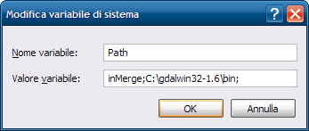
Aggiungere “GDAL_DATA” come nuova variabile d’ambiente.
Fare click su “Nuovo” nella finestra “Variabili d’ambiente”.
Inserire “GDAL_DATA” nel campo “Nome variabile”.
Inserire il percorso completo della cartella data di GDAL nel campo “Valore variabile” (nel nostro caso “C:\gdalwin32-1.6\data”).
Fare click su “OK”. Aggiungeremo più avanti altre variabili d’ambiente, quindi potete tenere aperta questa finestra di dialogo.
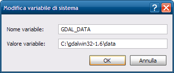
Installare PROJ.4 per Windows. E’ un pacchetto necessario per potere gestire le proiezioni ed i sistemi di coordinate.
Scaricare PROJ.4 da http://download.osgeo.org/proj/. Il file binario per Windows – proj446_win32_bin.zip – non è aggiornatissimo, ma non è un problema.
Decomprimere questo file in una cartella del vostro PC, ad esempio in “C:\proj”.
Aggiungere la cartella “bin” di PROJ.4 (“C:\proj\bin” nel nostro caso) alla variabile di ambiente “Path”. Per farlo dovete seguire gli stessi passi visti sopra per la cartella “bin” di GDAL, ed aggiungere stavolta “C:\proj\bin”.
Aggiungere “PROJ_LIB” come nuova variabile d’ambiente. Dovete seguire le stesse istruzioni usate per la variabile “GDAL_DATA”, ma il nome della variabile è stavolta “PROJ_LIB”, ed il valore è il percorso completo della cartella “nad” contenuta in PROJ.4 (C:\proj\nad nel nostro caso).
Copiare il file “proj.dll” dalla cartella “bin” di PROJ.4 alla cartella bin di GDAL. Nel nostro caso da “C:\proj\bin\” a “C:\gdalwin32-1.6\bin\”.
Installare il binding per Python di GDAL
Scaricare la versione appropriata alla vostra release di Python da http://pypi.python.org/simple/GDAL/. Il file più aggiornato, compatibile con la versione 2.6.X di Python, è “GDAL-1.6.1.win32-py2.6.exe”.
Fare doppio click sul file, e completare la procedura di installazione
Riavviare il sistema.
Al riavvio avrete a disposizione un sistema in cui sarà possibile scrivere codice SPAZIALE (nel senso di bel codice ).
Ciao mondo
Il codice sottostante lo potrete usare come test “Ciao Mondo”, e verificare la procedura seguita.
# importazione dei moduli
import sys
try:
from osgeo import ogr
except:
import ogr
# apertura di uno shapefile in lettura
driver = ogr.GetDriverByName('ESRI Shapefile')
fn = 'C:/nomefile.shp'
dataSource = driver.Open(fn, 0)
# verifica dell'esistenza del file
if dataSource is None:
print 'Il file ' + fn + ' non esiste'
sys.exit(1)
# accesso al layer
layer = dataSource.GetLayer()
# conteggio delle feature
numFeatures = layer.GetFeatureCount()
print 'Numero di feature: ' + str(numFeatures)
# estensione del layer
extent = layer.GetExtent()
print 'Estensione:', extent
print 'Coordinate vertice in alto a sinistra:', extent[0], extent[3]
print 'Coordinate vertice in basso a destra:', extent[1], extent[2]
L’output sarà qualcosa di simile a quanto riportato sotto:
Numero di feature: 33
Estensione: (280151.67957063887, 294843.14350770513, 4210159.3865045626, 4220843.5284850718)
Coordinate vertice in alto a sinistra: 280151.679571 4220843.52849
Coordinate vertice in basso a destra: 294843.143508 4210159.3865
Buone letture
La procedura descritta in questo post è quasi una traduzione dell’eccellente documento scritto da Chris Garrard: “Installing GDAL manually”. Il dott. Garrard cura un corso denominato “Geoprocessing with Python using Open Source GIS“, di cui trovate online il materiale didattico (slide, esercizi e codice); è stato per me illuminante per fare i primi passi e consiglio a tutti i novizi di leggerlo: ASSOLUTAMENTE DA NON PERDERE (si, sto urlando).
Per chi non ha mai scritto codice Python, e non ne ha alcuna conoscenza, la pietra miliare è (per me) “Pensare da informatico“.
Buoni propositi
Il desiderio mio (e credo dei colleghi della redazione) è quello di non lasciare questo post da solo. Nel 2011 vorrei mettergli accanto dei fratellini; non saranno magari dei ricchi tutorial, ma la coppia GIS & Python sarà uno dei temi che terremo sotto osservazione e di cui daremo nota nel blog e/o soltanto nei canali Twitter e Facebook.
Buona scrittura
In questi giorni il tema generale dell’installazione delle librerie GDAL su Windows è caldissimo. Sono in preparazione nuovi installer, e probabilmente nei prossimi mesi aggiorneremo questo post con una procedura più semplice e diretta.
Il lavoro di ogni giorno è spesso routinario; spesso anche per chi si occupa di sistemi informativi geografici. Non parlo dell’analisi spaziale, ma di quelle cose che facciamo quasi ogni giorno: leggere le metainfomazioni di un file (e scoprire che sono povere), convertire il formato di un file, estrarre una porzione di una raster, etc.
Si tratta di operazioni in genere molto semplici, che siamo in grado di portare a termine con molti strumenti. Questo blog parla de “le cose che ci piacciono TANTO”; una di queste sono quelle utility che alleggeriscono il lavoro di ogni giorno, con un click del mouse ed un menu contestuale.
Vi parlerò di due applicazioni di questo tipo, una per Windows ed una per Ubuntu (e per tutte le distribuzioni che sfruttano Gnome), che sono in grado di “trasferire” sul tasto destro del mouse alcune comuni operazioni utili ad un utente GIS.
Il prerequisito è che nel nostro sistema operativo siano installate le librerie GDAL, che sfrutteremo come motore delle operazioni “spaziali”. Per installarle su Windows basterà scaricare ed installare FWTools, mentre su Ubuntu basterà installare gdal-bin tramite synaptic o tramite riga di comando.
Alla fine del post saremo in grado di fare click con il destro su una TIFF del nostro hard-disk, ed eseguire queste due semplici (ma comodissime operazioni):
convertirla in un altro formato spaziale (in questo esempio eseguirò la conversione in formato JPG2000, un eccellente formato compresso che può avere attributi geografici)
leggerne le metainformazioni (anche quelle spaziali)
Se dovessi ottenere questi due risultati con le librerie GDAL, dovrei aprire il prompt dei comandi e scrivere rispettivamente:
> gdal_translate -of JP2ECW input.tif output.jp2
> gdalinfo input.tif
Vedremo come convertire questi comandi testuali, in operazioni da eseguire con il mouse.
Su Windows
Su Windows sfrutteremo Open++, un’utility di 200kb che consente di personalizzare l’elenco di comandi presenti nel menu contestuale, che si apre quando si clicca con il tasto destro del mouse su un file (o su una cartella).
Una volta che lo avrete scaricato ed installato, troverete una nuova voce nel menu che si aprirà al click con il destro su un file; è visibile nella figura sottostante (“Open++”).
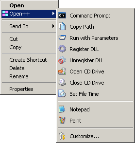
L’utilizzo è immediato e quasi autoesplicativo, in quanto Open++ è già configurato per eseguire delle comode operazioni di base: ade esempio copiare il percorso assoluto di un file (Copy Path), o aprire il prompt dei comandi a partire dalla cartella selezionata (Command Prompt). Questi due stupidi comandi, sono già un ottimo esempio di alleggerimento del lavoro.
Il primo comando che voglio aggiungere, ci consentirà di convertire in formato JPG2000 un’immagine TIFF. Per inserire questo nuovo comando, tra quelli disponibili in Open++, dovrò cliccare sull’ultima opzione del suo menu a tendina: “Customize” (vedi figura poco sopra).
Mi si aprirà la finestra sottostante:
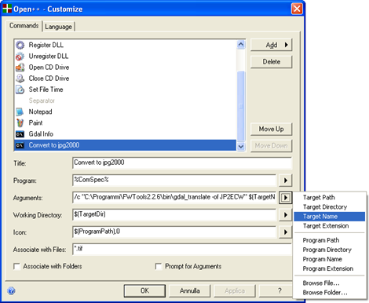
Questi i passi da eseguire:
cliccare in alto a destra sul tasto “Add”, e scegliere l’opzione “Command”
cliccare sulla cella “Title”, ed aggiungere un nome descrittivo al comando che si sta creando (ad esempio “Convert to JPG2000”)
inserire nella cella “Program” il programma che si vuole lanciare. Nel nostro caso vogliamo lanciare il prompt dei comandi e basterà scrivere “%ComSpec%”
scrivere nella cella “Arguments” gli argomenti che vogliamo passare al nostro comando. Nel nostro caso inseriremo la seguente stringa ‘/c “C:\Programmi\FWTools2.2.6\bin\gdal_translate -of JP2ECW” $(TargetName)$(TargetExt) $(TargetName).jp2′
il parametro “/c” fa sì che il prompt dei comandi venga chiuso al termine dell’operazione
“C:\Programmi\FWTools2.2.6\bin\gdal_translate” è il percorso assoluto (nel mio pc) dell’utility GDAL – gdal_translate – che gestisce le conversioni tra formati di file spaziali
“-of JP2ECW” è il parametro necessario per impostare JPG2000 come formato di output
$(TargetName)$(TargetExt) sono delle variabili che coincidono con il nome e con l’estensione del file su cui cliccheremo con il destro, e che verranno valorizzate dinamicamente al lancio del comando. Se ad esempio il file su cui farò click sarà “c:\dati\input.tif”, la variabile “$(TargetName)” verrà sostituito da “c:\dati\input” e “$(TargetExt)” da “.tif”.
lo stesso si dica per $(TargetName).jp2, che verrà sostituito da “c:\dati\input.jp2”
cliccare sulla cella “Associate with Files” e scrivere *.tif
in questo modo il comando di conversione formato sarà disponibile soltanto per i file con estensione .tif (è possibile aggiungere altre estensioni, separandole tramite “;”)
impostare gli altri parametri come nella figura soprastante e cliccare su “OK”
A questo punto aprite una cartella in cui avete un file TIFF, fateci click sopra con il destro del mouse, e selezionate Open++/Convert to JPG2000. Si aprirà il prompt dei comandi e verrà lanciato il comando gdal_translate; a comando eseguito il prompt dei comandi si chiuderà automaticamente e troverete il file JPG2000 (con estensione .jp2) nella stessa cartella in cui è presente il file TIFF.
Quello di sopra è soltanto un esempio; si può di più, meglio e diversamente. Consideratelo come un primo tutorial, dopo il quale iniziare a dare sfogo alla vostra fantasia ed alla vostra competenza.
Per ottenere le metainformazioni spaziali di un file TIFF, utilizzando soltanto il tasto destro del mouse, dovrete un creare un nuovo comando. La procedura è quasi identica alla precedente, salvo per la cella “Arguments”: dovrete inserire la stringa ‘/k “C:\Programmi\FWTools2.2.6\bin\gdalinfo $(TargetName)$(TargetExt)’.
La differenza più importante è il parametro “/k”, che farà in modo che il prompt dei comandi non venga chiuso al termine del comando gdalinfo. Nella finestra del prompt potrete quindi leggere le metainformazioni del file che avrete selezionato.
In questo filmato vedrete i due comandi in azione:
Su Linux
In questo caso sfrutteremo Nautilus-actions, un’utility analoga a Open++ in ambiente GNOME e quindi anche in Ubuntu. E’ installabile tramite synaptic o digitando nella shell:
>sudo apt-get install nautilus-action
Una volta installato lo troverete nel menu Sistema/Preferenze/Nautilus Actions Configuration.
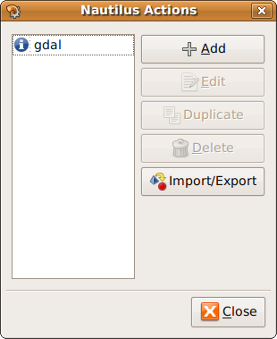
Creiamo un’azione (action) che estragga le metainformazioni da un tif selezionata.
Questi i passi da seguire:
cliccare su Add
inserire nella cella “Label” un nome descrittivo del comando (ad esempio “gdal_info”)
scegliere – è opzionale – un tooltip per il comando (ad esempio “cliccare qui per avere le metainformazioni del file selezionato”)
scegliere – è opzionale – un’icona per il comando
definire il comando da lanciare, tramite la cella “Path”
inserire la stringa “bash -c”
impostarne la stringa “gdalinfo %d/%f > %d/%f.txt && gedit %d/%f.txt” nella cella “Parameters
“%d “e “%f ” sono delle variabili che verrano sostituite dinamicamente dal percorso (senza estensione) e dall’estensione del file selezionato
il carattere “>” farà sì che l’output del comando – le metainformazioni – possano essere scritte e memorizzare in un file di testo
“%d/%f.txt” faranno si che il file di testo venga salvato nella stessa cartella del file selezionato (%d), con lo stesso nome (%f) e con estensione .txt
“&&” fa si che venga esguito il comando successivo – gedit – ma soltanto dopo la fine del primo
“gedit %d/%f.txt” per aprire con l’editor di testo di Ubuntu il file di testo appena creato
cliccare sul Tab “Conditions” e scrivere nella cella “Filenames” la stringa “*.tif” (in questo modo il comando gdal_info sarà visibile soltanto per file con estensione .tif)
selezionare il radio botton “Only files”
e cliccare su OK
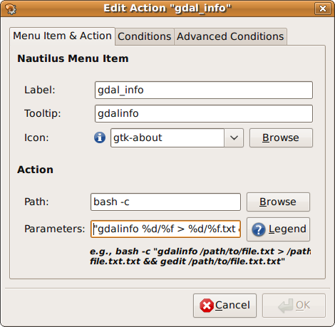
A questo punto non ci resta che fare click con il destro su un file .tif e provare il comando appena creato. Aggiungo però qualche spiegazione dovuta. Cosa è bash?
Si tratta di un interprete di comandi che permette all’utente di comunicare col sistema operativo attraverso una serie di funzioni predefinite, o di eseguire programmi.
Il parametro “-c” forza bash a leggere i comandi dalla stringa di testo che segue, che nel nostro caso è quella del punto 6 di sopra.
Nel filmato sottostante vedrete (male, è saltata una parte) il comando in azione:
Nautilus-actions è a mio avviso un gioiellino. Una caratteristica che lo fa brillare è la facilità di condividere i comandi creati. Lo si fa con il tasto “Import/Export” presente nella finestra principale. Qui ad esempio una serie di “azioni” già pronte. Il comando di conversione in JPG2000 è di facile implementazione e non lo svilupperò.
In chiusura
Prendete quanto scritto soltanto come spunto per “piegare” (ad esempio) le librerie GDAL/OGR al vostro tasto destro. Sono quasi un’analfabeta di istruzioni da riga di comando, e quelle che vi ho indicato possono sicuramente essere scritte meglio e più elegantemente. Mi piacerebbe molto che qualcuno condividesse qui la propria esperienza, con qualche comando “de paura”.
Lezioni online per spiegare scienza e tecnologia Oilproject organizza con l’Istituto Italiano di Tecnologia una serie di lezioni divulgative su neuroscienze, nanotecnologie, farmacologia e macchine intelligenti, per raccontare al grande pubblico lo stato dell’arte della ricerca di base e applicata. Qui tutti i dettagli. Leggi tutto... (0)
Il GFOSS Day 2011 è a Foggia I prossimi 24 e 25 novembre l’Università degli Studi di Foggia ospiterà il GFOSS DAY 2011, organizzato come di consueto dall’Associazione Italiana per l’Informazione Geografica Libera GFOSS.it Leggi tutto... (1)
Mappali, denunciali e... tassa.li Tassa.li è una interessante startup realizzata da un gruppo di giovani tecnologi, con l’intento di rendere facile la denuncia di esercizi commerciali che non rilasciano il regolare scontrino fiscale. E in un periodo nero come questo, molta gente avrà una gran voglia di partecipare. Grazie a una applicazione disponibile sia per iOS che Android, è infatti possibile in pochi clic geotaggare l’esercizio e riportare la somma dello scontrino non emesso. Il tutto in maniera assolutamente anonima. E questi ragazzi dimostrano di vedere molto lontano, perché presto rilasceranno i dati raccolti in forma totalmente aperta e libera. (7)
TANTO non rappresenta una testata giornalistica ai sensi della legge n. 62 del 7.03.2001, in quanto non viene aggiornato con una precisa e determinata periodicita'. Pertanto, in alcun modo puo' considerarsi un prodotto editoriale.